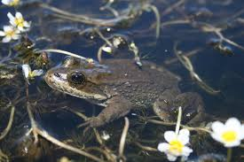
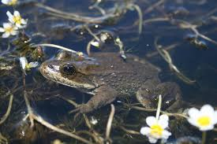

Skutki naszych zaniedbań
| Czyli co się stanie jeżeli nic się nie zmieni... | ||||
| Zdjęcie | Gatunek | Nazwa Łacińska | Przyczyna wyginięcia | |
|---|---|---|---|---|
 

|
Columbia Spotted Frog | Rana luteiventris |
Zobacz więcejWysychanie jeziorNamnażanie się groźnego grzyba Batrachochytrium Dendrobatidis |
|

|
Staghorn coral | Acropora Cevicornis |
Zobacz więcejWzrost temperatury oceanów |
|

|
Szczekuszka amerykańska | Ochotona Princeps |
Zobacz więcejWzrost temperatury powietrza |
|

|
Pingwin Adélie | Pygoscelis Adeliae |
Zobacz więcejZanikanie terenów lęgowych w wyniku topnienia lodu |
|

|
Koala | Phascolarctos Cinereus |
Zobacz więcejZagłodzenie spowodowane spadkiem wartości odżywczej eukaliptusa w wyniku skażenia dwutlenkiem węglaZanik lasów spowodowany pożarami |
|
„Według szacunków niektórych naukowców, żeby Ziemia mogła funkcjonować w miarę normalnie i żeby to, co jest w stanie wyprodukować, mogło być skonsumowane przez ludzi bez dużego uszczerbku dla jej funkcjonowania, populacja ludzka jest o ponad połowę za duża już w tym momencie”
Badania na owadach przeprowadzone w Niemczech czy we Francji wskazują, że w ciągu ostatnich 30 lat populacje
tych bezkręgowców, czyli organizmów m.in. zapylających rośliny, w tym takich, które są użytkowane przez człowieka
(dzięki nim mamy np. jabłka, pomidory czy owoce cytrusowe), w niektórych regionach zmniejszyła się nawet o 70 proc.
"Jeżeli będą wymierać owady odpowiadające za zapylanie roślin, stanowiących przecież główne źródło pokarmu dla ludzi
i wielu gatunków zwierząt, będzie to skutkowało stopniowym, ale drastycznym pogarszaniem się warunków dla człowieka,
szczególnie w takich miejscach, gdzie zaludnienie jest duże”